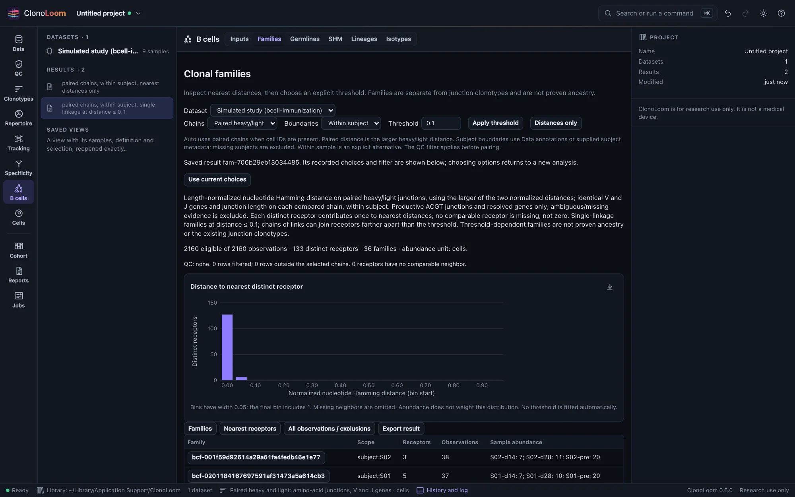
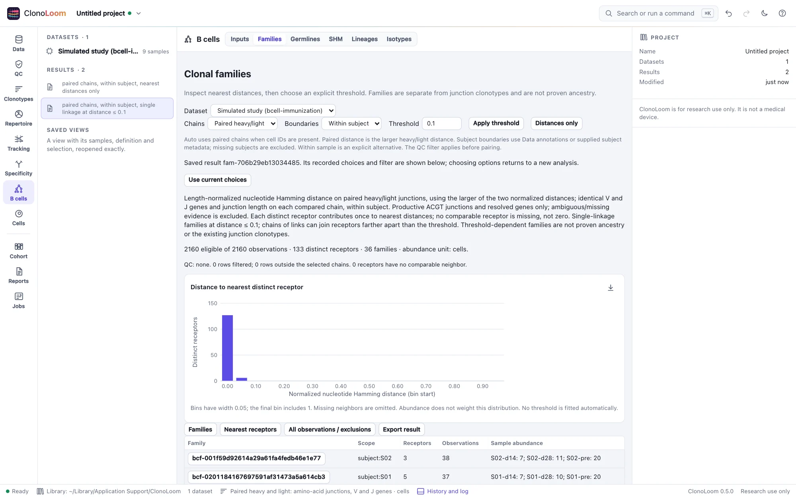

B-cell clonal families
B cells → Families keeps threshold-dependent families separate from existing junction clonotypes.
Inspect distances first


Open BCR data, annotate each sample's subject in Data, then choose B cells → Families. Leave the threshold empty and select Measure nearest distances. The distribution counts each distinct nucleotide receptor once within its scope, without abundance weighting. A receptor with no comparable neighbor is reported separately, not as distance zero.
Choose Within subject to compare samples of the same person. Missing subjects are excluded; they are never pooled. Within sample is an explicit alternative when subject annotations are unavailable or samples should be analyzed independently. The QC filter applies before grouping.
Choose an explicit threshold
Distance is nucleotide mismatches divided by junction length, within identical V gene, J gene and junction-length partitions. Only productive ACGT junctions with resolved genes are eligible. Same-gene allele ties are accepted. Ambiguous genes, junctions and missing evidence are reported as exclusions.
Enter a value between 0 and 1, choose Apply threshold, then Find clonal families. Edges join receptors whose distance is at most the threshold. Connected components implement single linkage: a chain of links can join endpoints farther apart than that threshold. Zero gives exact identity; an empty threshold gives distances only. ClonoLoom does not fit a threshold automatically.
The method follows the published partitioning and clustering framework of Gupta et al. (2015) and Gupta et al. (2017). Families express a chosen sequence-similarity criterion, not proven ancestry or antigen specificity.
Heavy and light chains
Auto selects paired mode when cell IDs are present; otherwise it uses heavy chains. Paired mode requires exactly one distinct heavy and one distinct kappa or lambda chain per cell. Identical duplicate chains collapse. Missing, invalid or multiple distinct chains exclude that observation. Cell IDs are scoped by sample.
Paired distance is the larger heavy/light normalized distance, and both chains must match their own V/J/length partitions. This conservative paired policy is specific to ClonoLoom. Heavy-only mode is also available. Each eligible cell contributes one to sample abundance, regardless of contig counts. Bulk rows retain their count unit; unknown abundance remains missing.
Inspect and export
Select a family to page through its observations, then select an observation to inspect cell, sequence and source identities. Nearest receptors and all observations, including exclusions, have separate pages. Results are immutable and reopen from the project tree even after choices change.
Export result writes every family/sample total, nearest receptor and source-row membership, alongside the complete JSON, manifest and cited NOTICE. Membership abundance belongs to the observation: do not sum its repeated value across heavy/light source rows. Blank nearest distances and abundance are missing, not zero. The figure export carries its method caption; the methods paragraph names the saved choices and sources.
Exact work is limited to 250,000 observations and 200 million base comparisons. Exceeding a limit stops the job with an explanation; no hidden sampling occurs. Narrow the QC filter or explicitly analyze within sample when appropriate.
Known artificial families
Open the artificial B-cell immunization example and follow its distance and family steps. The 2,160 cells contain 133 distinct paired nucleotide receptors. At 0.05 they form 43 families; at 0.1 they recover the exact 36 known families. An independent CSV/graph calculation verifies all memberships and nearest distances. This checks artificial truth, not biological accuracy. Continue to Germlines for reference reconstruction. Continue from germlines to SHM and Lineages, or summarize Isotypes directly from saved families.